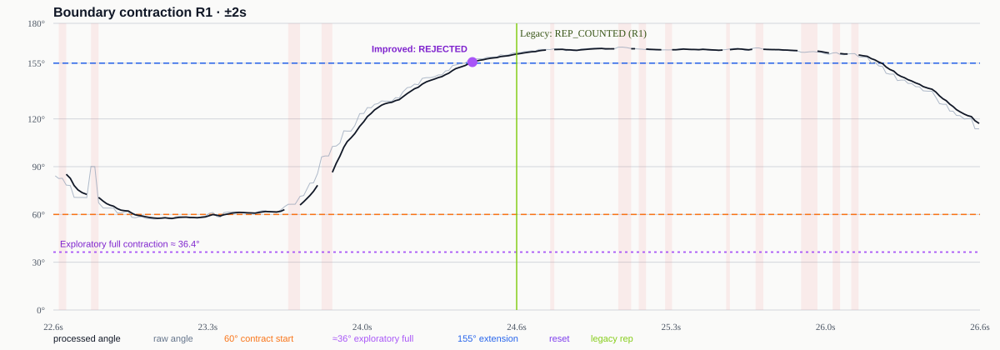
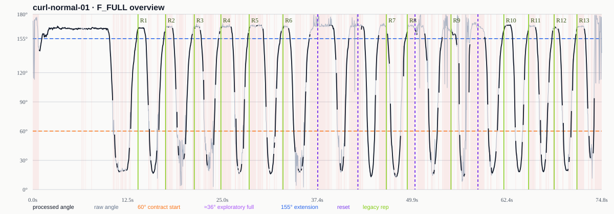
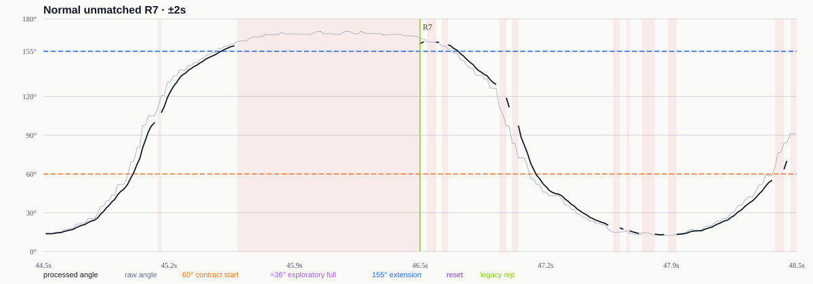

3개 canonical fixture × 6개 구성의 결과와 이벤트 해시가 재실행에서도 일치했습니다.
Computer Vision · Algorithm Engineering
관절 좌표를 재현 가능한 판정으로.
실제 관절 시계열을 고정 입력으로 재실행해 후처리 요소를 비교하고, 남은 오카운트를 rep-event 단위로 추적해 상태 머신의 원인을 개선했습니다.
Computer Vision · Algorithm Engineering
흔들리는 관절 좌표를 신뢰 가능한 1회로.
MoveNet의 관절 추정 결과를 검증·평활화하고, 시간 기반 상태 머신으로 완전한 운동 동작만 판정한 실시간 영상 분석 알고리즘 사례 연구입니다.
pose stream
right_curl / normal
∠ elbow 58°
01 / 핵심 결과 · KEY RESULTS
한 번의 성공을 반복 가능한 검증 근거로 확장했습니다.
브라우저 데모의 정확 일치에서 멈추지 않고, 실제 관절 fixture·offline runner· canonicalization·ablation·이벤트 원인 분석까지 하나의 검증 흐름으로 연결했습니다.
강한 추적 실패 구간의 잘못된 count를 EMA 이후 구성에서 0회로 억제했습니다.
완전 수축 기준을 분리한 탐색적 FSM으로 경계 수축 false positive를 제거했습니다.
28 passed 자동화 테스트
출발점 10 = 10 최초 브라우저 정상 컬 baseline
현재 핵심 증거는 고정 입력 기반 재실행과 원인 분석입니다.
01 / SYSTEM VIEW
전체 구조를 먼저 보고, 판단 로직을 따라갑니다.
카메라 입력부터 관절 추정, 유효성 검사, 운동 판정과 성능 기록까지의 전체 구조입니다. 세 가지 관점으로 같은 시스템을 살펴볼 수 있습니다.
ARCHITECTURE
역할을 분리한 브라우저 영상처리 시스템
MoveNet은 관절 추정, OpenCV는 입력 품질 분석, 직접 구현 알고리즘은 검증과 운동 판정을 담당합니다.
flowchart LR
CAM["Webcam
1280×720"] --> VIDEO["Browser Video"] subgraph AI["AI Pose Estimation"] VIDEO --> MOVENET["MoveNet
17 Keypoints"] end subgraph CORE["FitForm Algorithm"] MOVENET --> GATE["Confidence &
Boundary Gate"] GATE --> EMA["EMA Smoothing"] EMA --> GEO["Angle &
Velocity"] GEO --> FSM["Time-based
Rep FSM"] end subgraph QUALITY["Input Quality"] VIDEO --> OPENCV["OpenCV.js"] OPENCV --> QMETRIC["Brightness &
Sharpness"] end FSM --> UI["Live Feedback
& Rep Count"] FSM --> REPORT["JSON / CSV
Evaluation"] QMETRIC --> UI QMETRIC --> REPORT classDef source fill:#11140f,color:#fff,stroke:#11140f; classDef ai fill:#dce4ff,color:#11140f,stroke:#335cff; classDef core fill:#d9ff43,color:#11140f,stroke:#11140f; classDef quality fill:#fffef9,color:#11140f,stroke:#11140f; classDef output fill:#335cff,color:#fff,stroke:#11140f; class CAM,VIDEO source; class MOVENET ai; class GATE,EMA,GEO,FSM core; class OPENCV,QMETRIC quality; class UI,REPORT output;
1280×720"] --> VIDEO["Browser Video"] subgraph AI["AI Pose Estimation"] VIDEO --> MOVENET["MoveNet
17 Keypoints"] end subgraph CORE["FitForm Algorithm"] MOVENET --> GATE["Confidence &
Boundary Gate"] GATE --> EMA["EMA Smoothing"] EMA --> GEO["Angle &
Velocity"] GEO --> FSM["Time-based
Rep FSM"] end subgraph QUALITY["Input Quality"] VIDEO --> OPENCV["OpenCV.js"] OPENCV --> QMETRIC["Brightness &
Sharpness"] end FSM --> UI["Live Feedback
& Rep Count"] FSM --> REPORT["JSON / CSV
Evaluation"] QMETRIC --> UI QMETRIC --> REPORT classDef source fill:#11140f,color:#fff,stroke:#11140f; classDef ai fill:#dce4ff,color:#11140f,stroke:#335cff; classDef core fill:#d9ff43,color:#11140f,stroke:#11140f; classDef quality fill:#fffef9,color:#11140f,stroke:#11140f; classDef output fill:#335cff,color:#fff,stroke:#11140f; class CAM,VIDEO source; class MOVENET ai; class GATE,EMA,GEO,FSM core; class OPENCV,QMETRIC quality; class UI,REPORT output;
DATA FLOW
유효하지 않은 프레임은 판정 경로에서 제외
모든 관절 좌표를 신뢰하지 않습니다. 필수 관절 검사를 통과한 프레임만 각도 계산과 상태 머신으로 전달합니다.
flowchart TD
F["Camera Frame"] --> K["17 Keypoints
x, y, confidence"] K --> V{"Required joints
valid?"} V -- "No" --> DROP["Reject frame"] DROP --> WARN["User guidance"] DROP --> SAFE["Keep completed reps
Reset pending state after 1s"] V -- "Yes" --> SMOOTH["Smoothed coordinates"] SMOOTH --> ANGLE["Joint angle θ"] ANGLE --> VELOCITY{"Velocity sample
within limits?"} VELOCITY -- "No" --> ZERO["Reject velocity
ω = 0"] VELOCITY -- "Yes" --> FSM["READY → BOTTOM_HOLD
→ RETURNING"] ZERO --> FSM FSM --> REP{"Full cycle
completed?"} REP -- "Yes" --> COUNT["+1 rep"] REP -- "No" --> WAIT["Wait next frame"] COUNT --> METRIC["Accuracy &
performance report"] WAIT --> F classDef valid fill:#d9ff43,color:#11140f,stroke:#11140f; classDef reject fill:#ffe3df,color:#11140f,stroke:#c43b2f; classDef decision fill:#fffef9,color:#11140f,stroke:#335cff; classDef output fill:#335cff,color:#fff,stroke:#11140f; class SMOOTH,ANGLE,FSM,COUNT valid; class DROP,WARN,SAFE,ZERO reject; class V,VELOCITY,REP decision; class METRIC output;
x, y, confidence"] K --> V{"Required joints
valid?"} V -- "No" --> DROP["Reject frame"] DROP --> WARN["User guidance"] DROP --> SAFE["Keep completed reps
Reset pending state after 1s"] V -- "Yes" --> SMOOTH["Smoothed coordinates"] SMOOTH --> ANGLE["Joint angle θ"] ANGLE --> VELOCITY{"Velocity sample
within limits?"} VELOCITY -- "No" --> ZERO["Reject velocity
ω = 0"] VELOCITY -- "Yes" --> FSM["READY → BOTTOM_HOLD
→ RETURNING"] ZERO --> FSM FSM --> REP{"Full cycle
completed?"} REP -- "Yes" --> COUNT["+1 rep"] REP -- "No" --> WAIT["Wait next frame"] COUNT --> METRIC["Accuracy &
performance report"] WAIT --> F classDef valid fill:#d9ff43,color:#11140f,stroke:#11140f; classDef reject fill:#ffe3df,color:#11140f,stroke:#c43b2f; classDef decision fill:#fffef9,color:#11140f,stroke:#335cff; classDef output fill:#335cff,color:#fff,stroke:#11140f; class SMOOTH,ANGLE,FSM,COUNT valid; class DROP,WARN,SAFE,ZERO reject; class V,VELOCITY,REP decision; class METRIC output;
SEQUENCE
한 프레임이 카운트로 바뀌는 순서
핵심 추론과 판정을 먼저 수행하고, OpenCV 품질 분석은 1초 간격의 보조 작업으로 실행해 운동 인식을 우선합니다.
sequenceDiagram
autonumber
actor User
participant Camera
participant MoveNet
participant Algorithm
participant OpenCV
participant UI
participant Report
User->>Camera: Start workout
loop Every animation frame
Camera->>MoveNet: Video frame
MoveNet-->>Algorithm: 17 keypoints
Algorithm->>Algorithm: Validate required joints
alt Invalid keypoints
Algorithm-->>UI: Guidance, no count update
else Valid keypoints
Algorithm->>Algorithm: EMA → angle → velocity
Algorithm->>Algorithm: Advance rep state
Algorithm-->>UI: Skeleton, phase, reps
end
opt Every 1000ms
Camera->>OpenCV: Downscaled frame
OpenCV-->>UI: Brightness & sharpness
end
Algorithm-->>Report: Timing & validation sample
end
User->>Report: Enter true reps
Report-->>User: JSON / CSV result
Next 01문제 원인
왜 원시 관절 좌표를 바로 쓸 수 없었는가
Next 02해결 과정
어떤 필터와 상태 머신을 설계했는가
Next 03검증 결과
무엇을 수치로 확인했고 어디까지 주장하는가
02 / 문제 정의 · PROBLEM
불안정한 관절 입력과 불완전한 동작 정의를 어떻게 재현 가능한 판정으로 만들 것인가?
좌표 흔들림과 추적 누락은 입력을 왜곡하고, 하나의 각도 기준을 여러 상태에 재사용하면 경계 동작을 완전한 반복으로 오인할 수 있습니다.
P.01
불안정한 관절 입력
좌표 흔들림, confidence 저하, 관절 누락이 각도와 상태 전이를 왜곡합니다.
P.02
상태 정의의 충돌
60°를 수축 시작과 완전 수축에 동시에 사용하면 경계 동작까지 count됩니다.
P.03
재현성의 공백
초기 EMA와 FSM 상태가 없으면 같은 좌표만으로 당시 판정을 완전히 복원할 수 없습니다.
데모의 정답을 맞추는 것을 넘어, 같은 입력에서 같은 판단과 원인 설명을 재현해야 합니다.
02 / 문제 정의 · PROBLEM
문제 원인 — 모델의 출력은 곧바로 정답이 아니었습니다.
실시간 카메라에서는 좌표가 흔들리고, 관절이 가려지고, 임계값 주변에서 상태가 반복됩니다. 관절 좌표를 그대로 사용하면 오카운트가 발생합니다.
P.01
좌표 흔들림
프레임 간 작은 좌표 변화가 각도 노이즈로 증폭됩니다.
P.02
관절 누락
가림과 화면 이탈로 낮은 confidence 프레임이 섞입니다.
P.03
중복 전이
임계값을 한 번 넘는 것만으로 세면 불완전 동작도 횟수가 됩니다.
P.04
재검출 점프
관절을 다시 찾는 순간 비현실적인 각속도가 발생할 수 있습니다.
P.05
촬영 환경
저조도와 흐림은 관절 검출 실패와 알고리즘 실패를 혼동시킵니다.
P.06
검증 부재
실제 횟수와 예측값, 지연시간을 함께 기록해야 개선을 비교할 수 있습니다.
“불완전한 AI 관절 추정 결과를 어떻게 신뢰 가능한 운동 횟수로 변환할 것인가?”
03 / RESOLUTION
해결 과정 — 추론 이후의 판단 로직을 설계했습니다.
MoveNet은 17개 관절 좌표를 제공합니다. FitForm Live는 그 이후의 검증, 평활화, 기하 계산, 이상치 처리와 반복 판정을 담당합니다.
관절 유효성 검사
confidence ≥ 0.4와 화면 범위를 통과한 관절만 사용합니다.
EMA 평활화
현재 좌표 0.35, 이전 좌표 0.65로 프레임 흔들림을 줄입니다.
각도·각속도
벡터 내적으로 관절 각도를 구하고 비정상 각속도를 제외합니다.
시간 상태 머신
180ms 유지시간과 8° 히스테리시스로 완전 왕복만 셉니다.
pose-algorithms.js
pure function
// 관절 B를 기준으로 두 벡터의 사이각 계산 function angleBetween(a, b, c) { const ab = [a.x - b.x, a.y - b.y]; const cb = [c.x - b.x, c.y - b.y]; const cosine = dot(ab, cb) / (magnitude(ab) * magnitude(cb)); return acos(clamp(cosine, -1, 1)) * 180 / Math.PI; } // 시간 간격 8–250ms, |ω| ≤ 1000°/s if (invalidInterval || velocityOutlier) { rejectedSamples += 1; velocity = 0; }
rep state machine
time-based
READY angle ≥ 155°
↓ bottom 180ms
BOTTOM_HOLD angle ≤ 60°
↓ +8° hysteresis
RETURNING angle ≥ 68°
↓ top 180ms
READY + 1 REP complete
프레임 수가 아닌 경과시간을 사용해 기기별 FPS 차이가 판정에 미치는 영향을 줄였습니다.
03 / 원인 분석 · EVIDENCE
잔여 오인식을 숨기지 않고, rep cycle 단위로 원인을 분리했습니다.
같은 실제 관절 시계열에 후처리 기능을 한 단계씩 추가하고, 남은 카운트를 각도·상태 전이·라벨 이벤트까지 추적했습니다.
Cumulative ablation
동일 canonical 입력과 초기 상태에서 기능 하나씩 추가
| Configuration | Normal error | Boundary FP | Counts during failure |
|---|---|---|---|
| Baseline | 8 | 4 | 9 |
| Validation | 6 | 4 | 2 |
| EMA | 6 | 3 | 0 |
| Stable FSM | 5 | 3 | 0 |
| Full | 3 | 3 | 0 |

ROOT CAUSE · BOUNDARY R1
60°는 통과했지만, 충분한 수축은 아니었습니다.
동일 곡선에서 기존 FSM은 REP_COUNTED, 개선 FSM은 INCOMPLETE_CONTRACTION_REJECTED를 기록합니다.
- 기존 60°: 수축 진입과 완전 수축을 동시에 의미
- 정상 최소 각도 16.2~28.9°
- 경계 최소 각도 43.8~57.9°
- 약 36°: 두 분포 사이의 탐색적 기준, 최적값 아님
Before · one threshold, two meanings
수축 진입을 곧 완전 수축으로 처리했습니다.
READY
angle ≤ 60° → CONTRACTED
angle ≥ 155° + hold
REP_COUNTED
After · full-contraction-aware FSM
운동 milestone을 내부 4-phase 상태로 명시했습니다.
EXTENDED
angle ≤ 60° → CONTRACTING
angle ≈ 36° + hold → FULLY_CONTRACTED
RETURNING → angle ≥ 155° + hold
REP_COUNTED
Normal canonical cycles
기존 cycle을 추가로 누락시키지 않았습니다.
13→13
Boundary false positives
완전 수축 기준을 분리해 경계 cycle만 거부했습니다.
3→0


약 36°는 두 fixture에서 도출한 탐색적 기준이며 독립 검증 전에는 production 기본값으로 사용하지 않습니다. 정상 추가 세 cycle은 영상이 없어 실제 추가 운동, 재시도 또는 라벨 활성 구간 차이 중 무엇인지 확정할 수 없습니다.
04 / 알고리즘 · ALGORITHM
입력 안정화와 동작 정의를 서로 다른 책임으로 분리했습니다.
confidence gate와 EMA는 불안정한 입력을 다루고, 시간 기반 FSM은 유효한 움직임을 rep로 확정합니다. 분석에서 발견한 완전 수축 기준은 아직 탐색 단계입니다.
Confidence gate
필수 관절과 화면 범위를 검사해 무효 프레임을 판정합니다.
EMA
좌표 흔들림을 줄이되 원본 시계열은 별도로 보존합니다.
Time-based FSM
각도, hysteresis, hold time으로 완전한 왕복을 확정합니다.
Invalid reset
장시간 추적 실패 시 진행 중 상태만 초기화하고 완료 rep는 보존합니다.
현재 브라우저 FSM
READY→
BOTTOM_HOLD→
RETURNING
60°를 수축 판정에 사용합니다. 기존 브라우저 동작과 회귀 기준을 유지합니다.
완전 수축 인식 FSM
EXTENDED→
CONTRACTING→
FULLY_CONTRACTED→
RETURNING
약 36°를 탐색적 완전 수축 기준으로 분리했습니다. 독립 fixture 검증 전에는 production 기본값으로 적용하지 않습니다.
05 / 시스템 구조 · ARCHITECTURE
브라우저 안에서 추론, 판정, 입력 품질, 평가 데이터를 연결합니다.
중복되던 Architecture와 Data Flow를 한 흐름으로 통합했습니다. 프레임별 Sequence는 상세 작업 문서에 남겼습니다.
INPUTWebcam1280 × 720
→
POSEMoveNet17 keypoints
→
COREGate · EMA · FSMvalidation & rep decision
→
OUTPUTUI · JSON · CSVfeedback & evaluation
OpenCV.js는 별도 경로에서 밝기·선명도를 분석해 입력 품질을 설명합니다. 상세 데이터 흐름 문서 보기 →
05 / OPENCV
입력 품질을 느낌이 아닌 숫자로 남겼습니다.
OpenCV는 횟수를 직접 세지 않습니다. 촬영 환경 문제와 관절 판정 문제를 구분하기 위한 보조 영상 분석기로 사용했습니다.
frame quality
opencv.js ready
5.6ms
240px 분석 프레임 1회 처리시간
Brightness · 90.77
grayscale 프레임의 평균 밝기로 저조도 조건을 판별합니다.
Sharpness · 2,774.56
Gaussian blur 이후 Laplacian variance로 흐림 정도를 측정합니다.
Role separation
OpenCV는 입력 품질, MoveNet은 관절 추정, 직접 구현 로직은 운동 판정을 담당합니다.
06 / 한계와 다음 검증 · SCOPE
확인한 결과와 아직 확인하지 않은 주장을 구분했습니다.
10 = 10은 최초 baseline일 뿐입니다. 현재의 중심 근거는 실제 fixture 기반 결정론적 재실행, 실패 조건 비교, 잔여 오류의 원인 분류입니다.
64.6 FPS EMA frame rate
15.51 ms average inference
5.6 ms OpenCV input-quality frame
10 = 10 first browser baseline
현재 근거로 말할 수 있는 것
- 18개 fixture·configuration 조합의 결정론적 재실행
- 추적 실패 구간 count 9회에서 0회로 억제
- 정상 추가 cycle과 경계 오인식의 원인을 분리
- 탐색적 FSM에서 경계 false positive 3회에서 0회로 감소
- OpenCV 입력 품질과 MoveNet·판정 알고리즘의 역할 분리
다음 조건에서 확인할 것
- schema 1.1 독립 fixture로 약 36° 기준 검증
- 정상 추가 3 cycle의 영상 기반 라벨 구간 확인
- 여러 사용자·촬영 환경에서 threshold 일반화 평가
- 검증 후에만 탐색적 FSM의 production 적용 여부 결정
06 / SCOPE
증명한 것과 아직 증명하지 않은 것을 구분했습니다.
단일 성공을 전체 정확도로 확대하지 않습니다. 현재 근거의 범위를 명시하고, 다음 실험이 어떤 주장을 가능하게 하는지 연결했습니다.
이번 테스트가 보여준 것
- 정상 팔 컬 10회에 대한 정확 일치
- 실제 관절 fixture 기반 18개 결정론적 ablation
- 추적 실패 구간 카운트 9회에서 0회로 억제
- Rep cycle 분석으로 라벨 문제와 상태 정의 문제 분리
- 탐색 FSM에서 경계 오인식 3회에서 0회로 감소
- Raw·canonical·end-to-end 데이터 역할 분리
다음 조건에서 검증할 것
- Schema 1.1 정상 fixture로 약 36° 기준 독립 검증
- 가림 후 복구 fixture로 브라우저·runner parity 확인
- 다른 사용자와 촬영 각도에서 full contraction 분포 확인
- 저조도·흐림과 관절 검출률의 조건별 비교
- 정상 스쿼트로 운동 종류 확장
Engineering takeaway
AI 모델을 호출하는 데서 멈추지 않았습니다.
불안정한 관절 좌표를 애플리케이션의 신뢰 가능한 판단으로 바꾸기 위해 입력 검증, 신호 평활화, 기하 계산, 이상치 처리, 시간 상태 머신과 정량 검증을 하나의 실시간 파이프라인으로 설계했습니다.